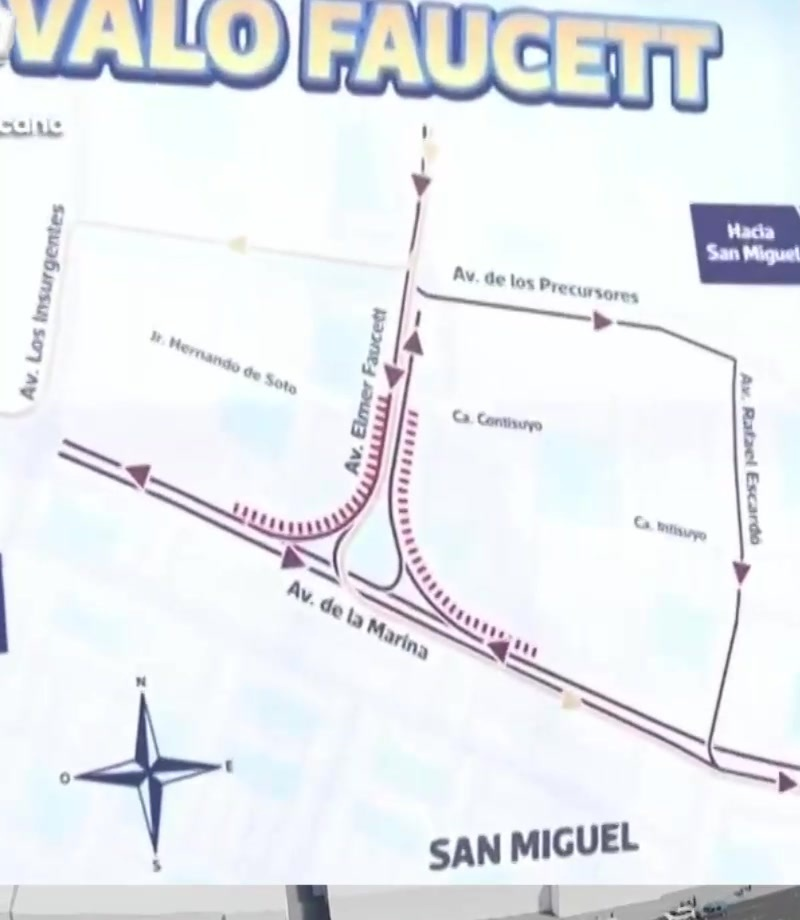
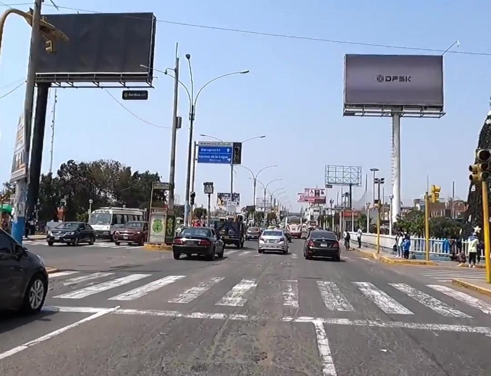

Nuevo Óvalo Faucett: Inician megaobra vial de S/ 15 millones para transformar el tránsito entre San Miguel y Callao
Con un plazo de ejecución de 180 días, comenzó la construcción de una moderna rotonda de 72 metros de radio exterior en la intersección de las avenidas Faucett y La Marina. Se habilitaron desvíos vehiculares mientras las vías principales continúan operativas para el transporte público.
Por Juan Sotomayor
Cobertura Especial • Área de Nacionales e Infraestructura
San Miguel • Callao
Video Reportaje (0:58 min)
🔊 El video inicia automáticamente en silencio según las directivas del navegador. Haz clic en el reproductor para activar el sonido.
Si vives en San Miguel, Bellavista o te trasladas a diario por el cruce neurálgico de las avenidas Elmer Faucett y La Marina, presta mucha atención. Desde el pasado 14 de septiembre, se pusieron en marcha las obras de construcción y remodelación del nuevo Óvalo Faucett, uno de los megaproyectos viales más esperados para destrabar el cuello de botella que conecta a Lima Metropolitana con la Provincia Constitucional del Callao.
Inversión de 15 millones y 180 días de ejecución
La obra representa una inversión pública superior a los 15 millones de soles y contempla un calendario de ejecución de 180 días calendario (aproximadamente seis meses). El propósito medular es modernizar por completo la intersección, suprimiendo los puntos ciegos y reduciendo sustancialmente los tiempos de traslado en horas punta hacia el Aeropuerto Internacional Jorge Chávez y los distritos del litoral limeño.
Primera etapa: Intervención en vías auxiliares sin cortar el transporte público
Durante esta primera etapa de los trabajos, las cuadrillas y maquinaria pesada se concentran en la intervención y reacondicionamiento de las vías auxiliares. Para amortiguar el impacto en la rutina de miles de pasajeros, los carriles principales de las avenidas Faucett y La Marina continúan plenamente habilitados para el transporte público.
Las autoridades han ratificado que, por el momento, se mantienen las rutas y paraderos habituales de autobuses y combis. Paralelamente, se ha diseñado un plan de contingencia peatonal que incluye senderos debidamente delimitados con vallas de protección, permitiendo que transeúntes y escolares crucen con resguardo hacia paraderos y comercios aledaños.

Características técnicas del Nuevo Óvalo
El diseño arquitectónico y de ingeniería civil contempla una nueva rotonda de 72 metros de radio exterior, dimensionada para admitir flujos de gran capacidad vehicular. Además del ensanche y optimización de radios de giro, el proyecto abarca:
- Nuevas vías auxiliares pavimentadas con asfalto de alta durabilidad para canalizar el tránsito local.
- Recuperación paisajística y áreas verdes integradas en el anillo central y bermas perimétricas.
- Sistema de iluminación LED de última generación que elevará la visibilidad nocturna y la seguridad ciudadana.
- Nueva señalización vertical y horizontal, con semaforización coordinada y cruces peatonales accesibles con rampas inclusivas.
"La remodelación integral del Óvalo Faucett marca el comienzo de una transformación indispensable en uno de los accesos más transitados entre Lima y el Callao. Con senderos delimitados y vías principales preservadas, la clave estará en el respeto estricto de las señales y las rutas alternas."

Recomendaciones para conductores y vecinos
Mientras continúan las labores sobre las vías auxiliares, las autoridades de tránsito y la Policía Nacional recomiendan a los transportistas y conductores particulares tomar en cuenta las siguientes pautas:
Planifica tus salidas: Calcula un margen adicional de 15 a 20 minutos durante los horarios punta matutinos y vespertinos.
Usa rutas alternas: Para ingresar a San Miguel, prioriza el desvío por la Av. de los Precursores y Av. Rafael Escardó.
Respeta la señalización: Obedece las indicaciones del personal de tránsito y los conos canalizadores en las zonas de obra.
Uso de paraderos oficiales: El transporte urbano mantiene sus paraderos establecidos; evita abordar vehículos en zonas de intervención técnica.
"Así comienza la transformación del Óvalo Faucett: seis meses decisivos para convertir un antiguo nudo de congestión en una rotonda moderna, ágil y segura para miles de familias peruanas."